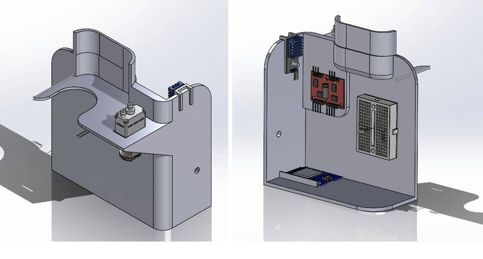

Objective: Design and build a fully autonomous plant watering system that monitors soil humidity, air temperature, and ambient light, and dispenses calibrated water based on sensor readings and a programmed schedule — eliminating the need for human intervention.
Home plants frequently fail due to irregular watering and the absence of condition-aware care. Most watering solutions rely on timers alone or lack the embedded sensing needed to respond to actual environmental conditions. This project targeted a fully integrated solution: a compact enclosure housing electronics, sensors, pump, and water supply that can be deployed next to any houseplant and operate autonomously for extended periods.
The enclosure was designed in SolidWorks and 3D printed on a FlashForge Adventurer 5M Pro. A central internal wall physically separates the wet side (pump and water bottle) from the dry side (electronics, breadboard, sensors). Key constraints: 8-hour max print time and practical FDM manufacturability.

All sensors share a parallel 3.3V/GND rail on the breadboard, with independent signal lines to the ESP32. Pump control runs through the motor controller at 3.3V. A critical early failure — accidentally powering the pump from the 5V rail — caused board damage from overvoltage stress (visible smoke). Recovery involved systematic pin-by-pin verification and a color-coded rewiring approach.
| Component | ESP32 Pin | Function |
|---|---|---|
| DHT11 sensor | GPIO 32 | Temperature & humidity (digital) |
| Photocell (LDR) | GPIO 34 | Illuminance (analog ADC) |
| Soil moisture sensor | GPIO 35 | Soil humidity (analog ADC) |
| Pump control | GPIO 2 | Motor driver signal (3.3V) |
The firmware manages two parallel scheduling concerns: sensor publishing every 10 minutes and a 24-hour base pump cycle, plus conditional pump triggering when soil humidity falls below threshold. An early bug caused the MQTT publish interval to fail: the delay() function blocked all loop execution. This was resolved by replacing all time-based delays with millis() comparisons, making the loop fully non-blocking.
Illuminance was computed from the ADC voltage using a derived quadratic relationship calibrated from bench measurements. Post-deployment analysis revealed the photocell had been wired in reverse polarity, causing inverted readings — identified as a hardware error, not a code fault.
Temperature and soil humidity readings were validated as reliable over the full deployment. Serial monitor confirmed successful WiFi connection, IP assignment, MQTT broker handshake, and pump trigger events. Illuminance readings were unreliable due to inverted photocell wiring — the sole outstanding hardware error.
Multiple sessions were lost attributing hardware faults to code errors. A multimeter should be a first-line debug tool, not a last resort.
The conflict between 10-minute publish intervals and 24-hour pump cycles is unsolvable with delay(); it required treating timing as a system-level architecture problem.
When the DHT mount snapped, printing a small 30-minute supplemental bracket was faster and safer than cycling the entire enclosure through another print job.